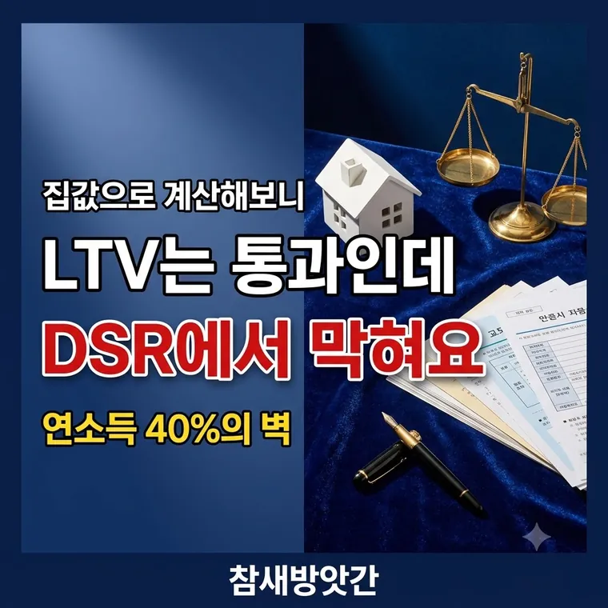

DSR LTV 차이 총정리: 집값과 소득으로 결정되는 대출 한도의 비밀
5억짜리 집에 LTV 70%면 3억 5천을 빌릴 수 있을 것 같습니다. 그런데 은행에서는 2억밖에 안 된다고 합니다. 보는 기준이 하나가 아니기 때문입니다.

하나는 집을 보고 하나는 사람을 봅니다
| 구분 | 무엇을 보나 | 계산 |
|---|---|---|
| LTV | 집값 | 대출금 ÷ 집값 |
| DSR | 내 소득 | 연간 원리금 ÷ 연소득 |
LTV는 담보로 잡는 집이 얼마짜리냐만 봅니다. 신청자의 소득이나 기존 빚은 보지 않습니다. KB시세나 감정가를 기준으로 합니다.
DSR은 반대입니다. 집값은 안 보고 이 사람이 갚을 수 있느냐만 봅니다.
LTV로 3억 5천이 나와도 DSR로 2억이면 → 2억
DSR 40%가 무슨 뜻인가
1년에 갚는 원금과 이자를 모두 더한 금액이 연소득의 40%를 넘으면 안 된다는 규제입니다. 은행권 기준입니다.
1년에 갚을 수 있는 원리금 = 5,000만 × 40% = 2,000만원
월로 치면 약 167만원
이 2,000만원 안에서 모든 대출을 굴려야 합니다. 새로 받을 주택담보대출만이 아닙니다.
기존 빚이 전부 들어갑니다
여기서 많이들 놀랍니다. DSR 계산에는 금융권에서 받은 거의 모든 대출이 합산됩니다.
신용대출, 마이너스통장, 자동차 할부금, 카드론, 현금서비스, 다른 담보대출이 다 들어갑니다.
전체 한도 2,000만원 − 기존 800만원
→ 주택담보대출로 쓸 수 있는 원리금 1,200만원
한도가 40% 줄어듭니다
그래서 집을 사기 전에 신용대출이나 자동차 할부를 먼저 정리하면 주택담보대출 한도가 늘어납니다. 소액이라도 원리금이 빠지면 그만큼 여유가 생깁니다.
스트레스 DSR은 한도를 더 줄입니다
금융당국이 금리가 오를 때를 대비해 만든 제도입니다. 실제 금리에 가산금리를 얹어서 원리금을 계산합니다.
실제로 내는 이자가 늘어나는 게 아닙니다. 심사할 때만 더 비싼 금리로 계산해 보는 것입니다. 그러면 원리금이 커 보이고, DSR 비율이 올라가 한도가 줄어듭니다.
같은 소득 같은 조건이라도 수천만원씩 한도가 깎입니다. 그래서 몇 년 전 기준으로 계산해 두면 실제와 크게 어긋납니다.
계약 전에 먼저 알아봐야 합니다
LTV만 보고 계약금을 걸었다가 대출이 모자라 곤란해지는 일이 흔합니다.
계약하기 전에 연소득, 기존 대출 원리금, 스트레스 금리를 모두 넣어 한도를 확인하시기 바랍니다. 은행에 미리 물어보면 가늠해 줍니다.
기존 신용대출이나 소액 대출을 먼저 갚으면 DSR에 여유가 생깁니다.
대출 기간을 늘리면 연간 원리금이 줄어 한도가 늘어나지만, 그만큼 총이자는 늘어납니다.
자주 묻는 질문
LTV는 집값 대비 대출 비율로 담보 가치만 봅니다. DSR은 연간 원리금을 연소득으로 나눈 비율로 갚을 능력을 봅니다. 최종 대출 한도는 두 기준 중 낮은 쪽으로 정해집니다.
1년에 갚는 모든 대출의 원금과 이자 합계가 연소득의 40%를 넘을 수 없습니다. 연소득 5,000만원이면 연간 원리금 한도가 2,000만원입니다.
포함됩니다. 신용대출, 마이너스통장, 자동차 할부, 카드론, 현금서비스 등 금융권 대출의 원리금이 모두 합산됩니다. 기존 대출을 갚으면 그만큼 주택담보대출 한도가 늘어납니다.
아닙니다. 가산금리는 한도를 계산할 때만 쓰는 평가용 수치입니다. 실제로 매달 내는 이자와 원리금은 약정한 실제 금리로 계산됩니다.